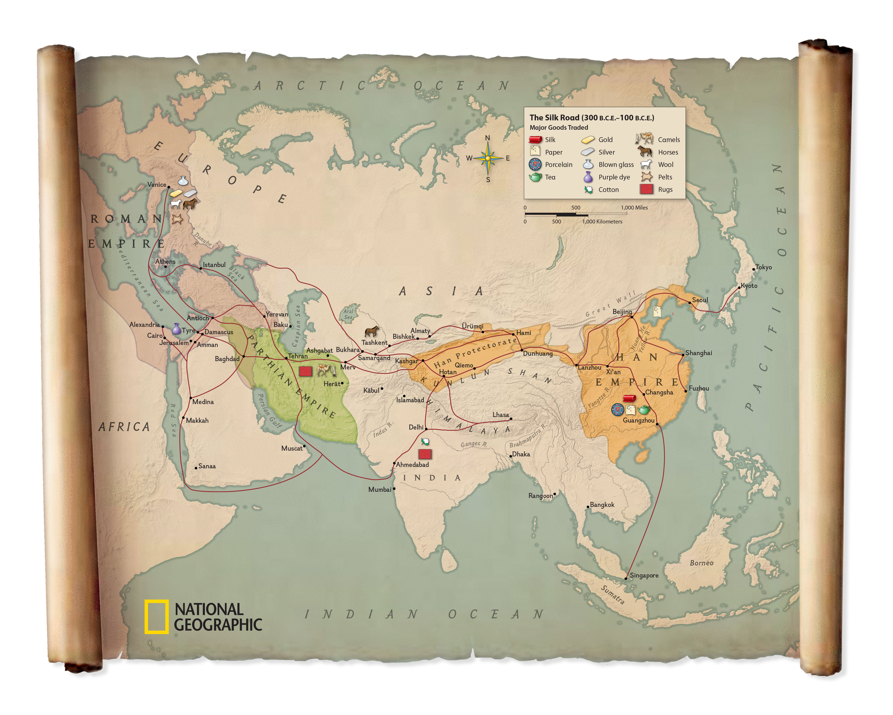

Why Did People Travel To India From Various Parts Of The World
1. Trade and Business
India has always been a land of great resources. Foreigners came to India to trade goods like:
• Spices: India was famous for its spices, like black pepper and cinnamon, which were valuable in other countries.
• Textiles: India made beautiful fabrics, including cotton and silk, which were highly prized.
• Jewels: India had many precious stones like diamonds, rubies, and pearls.
• Other goods: Traders came to buy and sell other products like gold, ivory, and timber.
2. Religious Background
India is the birthplace of major religions like Hinduism, Buddhism, and Jainism. Many people came to India to learn about these religions or visit sacred places.
3. Education
In the ancient times, the Indian Education system was great and and this attracted other people to travel to India. India had great universities like Takshashila and Nalanda. The foreigners also came to study various subjects like-
MATHEMATICS- Indians were the first to use the number zero, which was developed by the Indian mathematician , Aryabhata, and developed the decimal system.
ASTRONOMY-Indian scholars made important discoveries about the stars and planets.
MEDICINE- Indian doctors knew a lot about health and healing.
4. Culture and Art
India’s art, music and traditions attracted people who wanted to see and experience its beauty.
5. Wealth and Treasures
India’s rich stones like gold and diamonds, made explorers and rulers curious to visit it and find treasure.
The Indo-Gangetic Plain is a large, flat area with very fertile soil. It's formed by rivers population for thousands of years. Routes to Reach India
1. Land Routes:
o Silk Road:
The Silk Road was a famous series of trade routes that connected China, Central Asia, and India. Traders used these routes to travel through northern India, bringing goods like silk, spices, and tea.
o Khyber Pass:
The Khyber Pass is a mountain pass that connects India to Afghanistan and Central Asia. It was an important way for people and armies to travel into India from the northwest.
o Grand Trunk Road:
This ancient road connected places all over India, from Bengal in the east to Kabul in the northwest. It was used for trade and travel for hundreds of years.
2. Sea Routes:
o Maritime Routes (Indian Ocean):
India is surrounded by the Indian Ocean, which helped ships from Africa, the Middle East, and Southeast Asia to sail to Indian ports. This helped bring goods and ideas from other parts of the world.
Spice Route:
India was famous for its spices like pepper and cinnamon. Ships traveled across the Indian Ocean to bring these spices to other countries like Europe and the Middle East.
o Trade with Romans:
A long time ago, ships from the Roman Empire sailed to India to trade goods like silk and spices. The Indian ports, especially one called Muziris, were important trade centers.
3. Routes from the West (Middle East and Africa):
o Ships from the Persian Gulf and Arabian Sea came to the western coast of India to trade goods like textiles, spices, and jewels. These routes connected India to the rest of the world.
